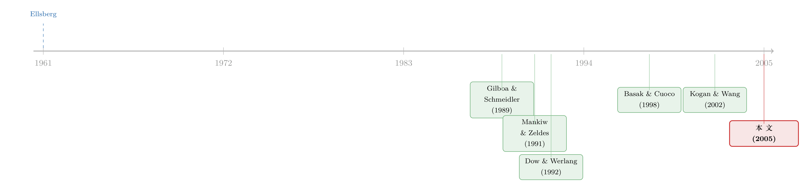

算不准均值的那群人，悄悄退出了股市——一个把「有限参与」内生出来的模型
本文读的是 Cao, Wang & Zhang (2005, Review of Financial Studies)：当投资者不仅怕「风险」、还怕「自己根本算不准均值」这件事（即模型不确定性），而且彼此算不准的程度不一样时，「有限的市场参与」会在均衡里自己长出来——不必假设有人被外生地挡在门外。更妙的是，由此推出的两个结论都与教科书相反：有限参与可能压低（而非抬高）股权溢价；而当参与受限时，把两家公司合并打包，会卖出一个折价。
1 一个老掉牙的事实，和一个不老实的解释
先说一个被反复念叨的事实：美国有相当一部分家庭，压根不碰股票。
数字是冷冰冰的。Mankiw and Zeldes (1991) 用 1984 年的 PSID 数据发现，2998 个家庭里只有 27.6% 持有股票；哪怕把样本收窄到「流动资产超过 10 万美元」的富裕家庭，持股比例也只有 47.7%。到了股市一路狂奔的 1990 年代，这个「有限参与」的现象依然顽固——1998 年的消费者金融调查里，连退休账户都算上，仍有过半美国家庭不持有任何股票或股票基金。
于是「为什么这么多人不买股票」就成了一道经典题。人们给过很多答案：交易成本、流动性需求 [Allen and Gale (1994)、Williamson (1994)]；固定的「入场费」[Vissing-Jorgensen (1999)、Yaron and Zhang (2000)]；甚至 Haliassos and Bertaut (1995) 一口气检验了风险厌恶、异质信念、习惯形成、借贷约束、最低投资门槛……结论却是：这些因素单拎出来谁也解释不了全貌。
最扎眼的反例是富人。一个手握十几万美元闲钱的家庭，会因为几百块入场费而放弃整个股市吗？说不通。这意味着，真正把人挡在门外的，恐怕不是「成本」这一类的摩擦。
接着，一个自然的问题是：会不会问题出在「风险」这个词本身被用得太轻巧了？
2 不是怕亏，是「算不准」
这里要引入本文的主角概念：模型不确定性 (model uncertainty)，也就是 奈特不确定性 (Knightian uncertainty)。
它和「风险」是两回事。风险是说：我知道收益服从某个分布，只是抽出来的结果有好有坏。不确定性则更深一层：我连那个分布本身都说不准。最经典的演示是 Ellsberg (1961) 的实验——人们宁可赌一个「红球比例已知」的瓮，也不愿赌一个「红蓝比例完全未知」的瓮，哪怕两者的期望完全一样。这种「对说不清的东西本能地躲」，标准的期望效用框架是装不下的。
处理它有两条路。贝叶斯派会说：那就对一堆候选模型放一个先验，再按预测分布去算期望效用——可这么一来，投资者对模型不确定性其实是中性的，他只是怕风险，不怕「不知道」。本文走的是另一条，即 Gilboa and Schmeidler (1989) 的 多先验期望效用 (multi-priors expected utility)：投资者手里不是一个分布，而是一整个集合 \(P\) 的候选分布；他按其中最坏那个分布来评估每个策略。
$$\min_{Q\in P}\; E_Q[u(W)]$$
直觉很朴素：我不确定真相是哪个分布，那我就按「往最坏处想」来决策。这一下，投资者就同时怕风险、又怕不确定了。
「按最坏情形评估」听上去像极度悲观，但它其实只是把「我对自己的估计没把握」这件事，翻译成了可以求解的优化问题。一个对均值越没把握的人，他的「最坏情形集合」就越大，行为也就越保守。
那这个集合 \(P\) 有多大？本文沿用 Kogan and Wang (2002) 的设定：以一个参考分布 \(P\)（比如计量估出来的那个）为中心，把所有满足 \(E_Q[\ln(dQ/dP)]\le\eta\) 的分布 \(Q\) 都收进来。\(\eta\) 是个置信水平的临界值；信息越少、估得越糊涂，\(\eta\) 越大，集合越宽。对正态分布、且方差已知的情形，这个置信域可以干净地写成一个对均值偏离 \(v\) 的约束：
$$v^2 \le \delta^2$$
也就是说，投资者认定真实均值落在 \([\mu-\delta,\ \mu+\delta]\) 这个区间里，\(\delta\) 越大，他对均值越没谱。\(\delta\) 就是这位投资者的「不确定性水平」。 这正是本文设定里最关键的一个假设：投资者对方差 \(\sigma^2\) 估得很准（波动率可预测，这有 Bollerslev, Chou, and Kroner (1992) 的经验支持），但对均值 \(\mu\) 心里没底——而这恰恰符合「预期收益极难估准」的现实。
3 模型：一个会「按兵不动」的需求函数
下面进入模型。设定刻意做得极简，为的是把直觉逼出来。
环境。 单期经济，一只股票一只债券，无风险利率为 0。股票每股收益 \(r\sim N(\mu,\sigma^2)\)。每个投资者禀赋 \(x>0\) 股，都是 CARA 效用、相同的风险厌恶 \(\gamma\)，唯一不同的是各自的不确定性 \(\delta_i\)。关键的异质性假设是：\(\delta\) 在投资者中均匀分布在区间
$$S_1=\big[\,\bar\delta-\Delta,\ \bar\delta+\Delta\,\big]$$
上，密度 \(1/(2\Delta)\)。这里 \(\bar\delta\) 是平均不确定性，\(\Delta\) 衡量不确定性在人群中的离散度（分歧）。当 \(\bar\delta=\Delta=0\)，模型退回标准的期望效用世界。
为什么不确定性会因人而异？很自然：不同机构用各自的私有模型分析同一批数据，估计精度本就不同；对市场的「熟悉感」差异也会带来差异 [Huberman (2001)]。本文不去深究来源，直接用不同的 \(\delta_i\) 概括它。
个体决策。 设股价为 \(P\)，投资者 \(i\) 持有 \(D_i\) 股，期末财富 \(W_{1i}=W_{0i}+D_i(r-P)\)。在正态 + CARA 下，他的「最大化最坏情形」问题化为
$$\max_{D_i}\ \min_{v}\ D_i(\mu-v-P)-\frac{\gamma\sigma^2}{2}D_i^2$$
先解里层的 \(\min\)：如果 \(D_i>0\)（做多），最坏情形就是把均值往下压到 \(\mu-\delta_i\)；如果做空，最坏情形是把均值往上抬到 \(\mu+\delta_i\)。代回去，外层问题变成
$$\max_{D_i}\ D_i\big[\mu-\mathrm{sgn}(D_i)\,\delta_i-P\big]-\frac{\gamma\sigma^2}{2}D_i^2$$
其中 \(\mathrm{sgn}(\cdot)\) 取符号。解出最优持仓：
$$D_i=\begin{cases}\dfrac{1}{\gamma\sigma^2}(\mu-\delta_i-P) & \text{if } \mu-P>\delta_i,\\[2mm] 0 & \text{if } -\delta_i\le \mu-P\le \delta_i,\\[2mm] \dfrac{1}{\gamma\sigma^2}(\mu+\delta_i-P) & \text{if } \mu-P<-\delta_i.\end{cases}$$
这里就是整篇文章的「心脏」。 注意中间那一段：当超额收益 \(\mu-P\) 落进区间 \([-\delta_i,\delta_i]\) 时，投资者既不做多、也不做空，而是彻底不参与。这是模型不确定性独有的特征——在标准期望效用里需求函数是连续穿过零点的，可一旦怕「算不准」，每个人脚下就出现了一段「不参与区」。而且，\(\delta_i\) 越大的人，这段「按兵不动」的区间越宽。
把这个微观特征放进市场，「谁参与、谁不参与」就不再需要谁去外生地规定了——它会从均衡价格里自己浮现出来。
4 两个世界：充分参与 vs. 有限参与
均衡里市场出清。可以证明股票总是折价交易（\(\mu-P>0\)），所以没人做空。于是分两种情形。
情形一：充分参与。 当不确定性的分歧 \(\Delta\) 不太大时，连最「胆小」的投资者都愿意下场。对需求函数在 \(S_1\) 上积分、令其等于人均供给 \(x\)，解出均衡定价方程：
这个分解是第一个漂亮的结论：股权溢价 = 风险溢价 + 不确定性溢价。Chen and Epstein (2001) 在代表性代理人模型里得到过类似的分解，但这里是异质代理人的均衡结果。更值得玩味的是：在充分参与下，价格只取决于「平均」不确定性 \(\bar\delta\)，而与「分歧」\(\Delta\) 完全无关。 高不确定的人少买、低不确定的人多买，加总之后，市场表现得像是所有人都揣着平均的那份不确定。
什么时候这个世界成立？条件是
$$\gamma\sigma^2 x>\Delta$$
直白说：只要分歧 \(\Delta\) 足够小，大家足够「同质」，人人参与。
情形二：有限参与。 可一旦 \(\Delta\) 大到 \(\gamma\sigma^2 x<\Delta\)，最胆小的那批人就退场了。设 \(\delta^\ast\) 是「恰好不再持股」的最低不确定性水平，则边际投资者满足 \(\mu-\delta^\ast-P=0\)。重新出清，解得
$$\delta^\ast=\bar\delta-\Delta+2\sigma\sqrt{\gamma\Delta x}$$
以及均衡价格
$$P=\mu-(\bar\delta-\Delta)-2\sigma\sqrt{\gamma\Delta x}$$
到这里，「有限参与」就内生地出现了：没有任何人被规则挡在门外，是他们自己算了一笔账后选择走开。这正是本文相对于既有文献最干净的一步——把一个一直被外生假设的现象，变成了均衡的产物。
（关于「有限参与究竟对股权溢价贡献几何」这条线后来的发展，可参见《谁被挡在股市门外，并不重要——重看「有限参与」对股权溢价的真实贡献》。）
5 反转一：有限参与，反而压低了股权溢价
接着，一个自然的问题是：有限参与会把股权溢价推高还是拉低？
教科书的答案几乎是条件反射：参与的人少了，能分担风险的肩膀少了，每个留下的人要扛更多风险，所以风险溢价必然上升，股权溢价随之走高。Mankiw and Zeldes (1991)、Basak and Cuoco (1998)、Attanasio, Banks, and Tanner (2002)、Brav, Constantinides, and Geczy (2002)、Vissing-Jorgensen (2002) 这一长串文献，基本都指向「参与越少、溢价越高」。但请注意，它们的有限参与全是外生设定的，而且都建立在不含模型不确定性的标准期望效用框架里。
本文把定价方程改写一下，就能看清问题的另一半。记
$$\mu-P=\frac{\gamma\sigma^2 x}{\lambda}+\delta_p$$
其中参与率
$$\lambda=\frac{\delta^\ast-(\bar\delta-\Delta)}{2\Delta}=\sigma\sqrt{\gamma x/\Delta}$$
是做多投资者的比例，而
$$\delta_p=\bar\delta-\Delta+\sigma\sqrt{\gamma\Delta x}$$
是市场参与者的平均不确定性。
这下两股力量就摆在一起了。当分歧 \(\Delta\) 变大：
- 风险溢价那一项 \(\gamma\sigma^2 x/\lambda\) 会上升——因为 \(\lambda\) 下降，留下的人少了，每人扛更多风险。这和传统文献一致。
- 但不确定性溢价那一项 \(\delta_p\) 会下降——因为退场的恰恰是那些「最算不准」的人，留在场内的都是相对有把握的，所以市场要求的不确定性补偿反而变小了。
两股力量方向相反。本文证明（Proposition 1，前提 \(\gamma\sigma^2 x<\Delta\)）：
(a) 参与率随分歧下降，\(\partial\lambda/\partial\Delta<0\)； (b) 参与者的平均不确定性随分歧下降，\(\partial\delta_p/\partial\Delta<0\)； (c) 股权溢价随分歧下降，\(\partial(\mu-P)/\partial\Delta<0\)。
也就是说，在这个设定里，不确定性溢价的下降压过了风险溢价的上升。结论于是反转：有限参与可能伴随着更低的股权溢价，而不是更高。这等于在提醒整条文献——「有限参与抬高股权溢价」这个预言，一旦你认真把模型不确定性放进一般均衡，可能就不再稳健了。
6 反转二：合并打包，为什么会卖出折价？
更漂亮的是，同一套机制还能伸到一个看似八竿子打不着的话题：多元化折价 (conglomerate / diversification discount)。
这是公司金融里另一桩公案。Lang and Stulz (1994)、Berger and Ofek (1995)、Rajan, Servaes, and Zingales (2000) 都发现，多元化企业平均带着 10–15% 的负超额价值；作为镜像，Hite and Owers (1983) 等记录到分拆 (spin-off) 公告前后股东价值上升 2–3%。但成因争得不可开交：有人说是内部资本市场低效、乱配资源 [Rajan, Servaes, and Zingales (2000)、Scharfstein and Stein (2000)]，也有人（Graham, Lemmon, and Wolf (2002)、Maksimovic and Phillips (2002)）找不到「跨部门乱花钱」的证据，甚至 Villalonga (2004) 用 BITS 数据发现多元化企业其实是溢价交易的。
本文给出的，是一个和资源配置效率完全无关的解释。把模型扩展到两只股票，逻辑顺理成章：
合并之前，每家公司的价格是由「对这家公司最有把握」的那批投资者定的。但合并之后，投资者必须把两家公司当成一个捆绑包整体买下。问题在于——一个对 A 公司很有把握的人，未必对 B 公司也有把握。于是他对这个捆绑包的不确定性，是两家「各自最低不确定性」的某种叠加，必然高于分开交易时的水平。结果，他愿意为合并后的公司出的价，就低于两家分开交易的价格之和。
折价，于是出现了。它不来自管理层乱花钱，而纯粹来自「不确定性没法像股票一样被自由打散重组」。这是一个很干净、也很反直觉的视角。（一条相关但出发点不同的「捆绑发债→竞争」暗线，可参见《捆在一起发债：多元化折价里，被忽略的那条「竞争」暗线》。）
7 文献脉络
把这条线捋一捋，会看到两股河流的汇合。
一股来自决策论与不确定性：Ellsberg (1961) 用一个瓮的实验戳破了期望效用的自洽，Gilboa and Schmeidler (1989) 用多先验期望效用给「怕不确定」一个公理化的家，Dow and Werlang (1992) 第一次把它用进投资组合、指出不确定性会制造一段「不持仓区」，Epstein and Wang (1994)、Chen and Epstein (2001) 把它推进到跨期资产定价。Kogan and Wang (2002) 则给出了本文直接借用的、可解的均值—方差版本。
另一股来自有限参与与股权溢价：Mankiw and Zeldes (1991) 摆出事实，Basak and Cuoco (1998) 在理论上论证「排除越多投资者、溢价越高」，Brav, Constantinides, and Geczy (2002) 等用「只看股东子样本」让标准模型在更低风险厌恶下匹配股权溢价。但这一股的所有作品，参与都是外生的。

本文站的位置，正是这两条河的交汇处：用第一股河的「模型不确定性 + 异质代理人」，去把第二股河里一直外生假设的「有限参与」内生化，并顺手把它对股权溢价、对多元化折价的含义重新算了一遍。和它最近的同门是 Kogan and Wang (2002)——框架几乎同源，但本文做的是异质代理人的均衡，而非单人决策。
（沿着「算不准」这条线往投资者行为走，本博客另有几篇相邻的讨论：《算不准「风险有多大」的那些天，散户在做什么？》 与 《当你不再相信自己估出来的那个均值》。）
8 评论与延伸（Q&A + 研究方向）
(a) 几个可能的疑问
Q：模型不确定性和「异质信念」(heterogeneous beliefs) 到底有什么不同？
异质信念是大家各自相信不同的均值点估计（你看多、我看空），分歧在「数字」上。模型不确定性是大家可能共享同一个点估计 \(\mu\)，但对这个估计有多可信各持己见，分歧在「置信区间的宽窄」上。本文刻意假设所有人点估计 \(\mu\) 相同，正是为了把 Miller (1977) 那种「意见分歧」剥离干净，只留下不确定性这一个驱动力。
Q：为什么是「最坏情形」？这是不是把投资者设得太悲观了？
它不是性格悲观，而是 Gilboa-Schmeidler 公理化下对「不确定性厌恶」的等价表述。关键不在于绝对水平有多低，而在于：一个人手里的候选分布集合越大（\(\delta\) 越大），他的最坏情形就越糟，行为越保守——这个单调关系才是模型的引擎，悲观的「绝对值」并不重要。
Q：「不参与区」是怎么冒出来的？标准模型里为什么没有？
因为做多时按 \(\mu-\delta\) 算账、做空时按 \(\mu+\delta\) 算账，两个最坏情形之间隔着一段 \(2\delta\) 宽的缝。只要 \(\mu-P\) 落在这条缝里，做多嫌贵、做空嫌便宜，最优解就是 \(D_i=0\)。标准期望效用里 \(\delta=0\)，缝宽为零，需求连续穿过零点，所以没有不参与区。
Q：「有限参与压低股权溢价」这个反转，靠不靠谱？会不会只是参数凑出来的？
它确实依赖于「不确定性溢价的下降压过风险溢价的上升」，而本文证明在其设定（CARA、均匀分布、单因子）下这个不等式成立。但作者也坦白，这是要让你警惕——不是说现实中股权溢价一定随参与下降而下降，而是说「参与越少溢价越高」这个被广泛接受的预言并非铁律，换一个考虑模型不确定性的均衡就可能翻盘。稳健性那一节（更一般的因子结构、动态设定）是用来支撑这个反转不只是巧合的。
Q：多元化折价的这个解释，能和「内部资本市场低效」区分开吗？
在理论上能：本文的折价里完全没有资源配置，纯由「不确定性不可打散」产生。但在实证上要分开它和效率假说很难——两者都预测折价。一个潜在的可分辨含义是：本文的机制预测折价应与「两块业务的不确定性相关性低、且分歧大」正相关，而效率假说更关注内部转移与代理冲突，这给了实证识别一个着力点。
Q：把方差假设成「估得很准」、只有均值算不准，会不会太强？
这是个简化，但有现实依据：波动率的可预测性（GARCH 类）远好于预期收益的可估性。作者也指出，若把不确定性放到方差上，分析会复杂很多但定性结论不变。真正的好处是这个假设换来了闭式解，让「不参与区」和两个溢价的分解都看得一清二楚。
(b) 几个可能的研究问题与提案
1. 把这套机制搬到公司债 / 信用市场。
【经济故事】债券投资者对违约「损失给定违约」(LGD) 和违约概率的估计往往极不精确，且不同机构（保险公司、共同基金、对冲基金）对同一发行人的「算得准不准」差异巨大。这正是 \(\delta\) 异质性的天然土壤；模型预测：当某类债券的不确定性分歧扩大时，会出现「高不确定投资者退出 → 持有人结构收窄 → 信用利差里的不确定性溢价被压低」。 【可行性】中。需要 TRACE 成交 + 持有人层面数据（如 eMAXX / NAIC）来度量持有人不确定性的离散度，识别上可借助评级分歧、分析师预测离散度作为 \(\Delta\) 的代理。难点是把「风险溢价」与「不确定性溢价」在利差里分开。
2. 用「持有人退出」检验有限参与与溢价的反向关系。
【经济故事】本文最反直觉的预言是「参与下降可能伴随溢价下降」。可以找一个让高不确定投资者集体退场的外生冲击（如某类机构因监管被迫减持某资产类别），看该资产的风险溢价究竟升还是降。 【可行性】中。识别需要一个干净的、只冲击「高不确定持有人」而非全体的事件；监管驱动的强制减持（如评级下调触发的清仓）是候选自然实验，但要小心火线甩卖与本文机制的混淆。
3. 外资持有人作为「高不确定」群体的天然样本。
【经济故事】外国投资者对本地公司的「熟悉度」更低，按 Huberman (2001) 的逻辑，他们的 \(\delta\) 系统性更高，应当更早退出、并更可能在不确定性分歧扩大时撤离。模型给「外资为何在波动期率先离场」提供了一个不靠恐慌、只靠不确定性的解释。 【可行性】高。跨国持仓数据（如 FactSet/EPFR）可度量外资份额随不确定性的变化；可用本地 vs. 外资的参与率差异检验「\(\delta\) 越高、不参与区越宽」这一微观预测。
4. 多元化折价的「不确定性相关性」检验。
【经济故事】本文机制预测：合并两块不确定性低相关的业务，折价更大（因为没有一群投资者同时对两块都有把握）。这与「业务越不相关、分散化收益越大」的传统直觉正好相反，是一个可证伪的尖锐预测。 【可行性】中。需要分部门数据（Compustat Segments）构造业务间不确定性相关性的代理（如各业务对应行业的分析师预测离散度相关性），再回归到超额价值上。
5. 动态化：不确定性会学习收敛吗？
【经济故事】本文是单期的。若投资者随时间学习、\(\delta\) 逐渐收窄，则参与率与溢价应呈现可预测的动态——新资产（IPO、新行业）初期不确定性高、参与受限、折价大，随信息积累而修复。 【可行性】中偏低。理论上需把模型嵌入递归多先验框架 [Epstein and Schneider (2003)]，实证上要找到「不确定性随时间下降」的可测代理，识别学习与其他时间趋势的分离是主要障碍。
9 我的判断
这篇文章的贡献，我愿意用一句话概括：它把「有限参与」从一个外生的假设，变成了一个内生的结论，而且只用了一个额外的成分——投资者怕「自己算不准」。 从一个 \(2\delta\) 宽的「不参与区」出发，它一路推出了三件事：股权溢价能分解成风险与不确定性两块；有限参与可能压低而非抬高溢价；多元化折价可以与资源配置效率毫无关系。每一步都干净、可解、且反直觉。在一个充斥着「加摩擦、调参数」的文献里，这种「换一个偏好假设、结论全盘翻新」的做法尤其可贵。
但对识别（这里更准确地说是「机制的经验可分辨性」）我有两点保留。其一，模型的反转结论高度依赖具体设定——CARA、均匀分布、单因子、方差已知。作者在稳健性一节做了拓展，但「不确定性溢价的下降压过风险溢价的上升」这个不等式在更一般的分布下是否仍成立，读者需要心里存个问号。其二，它的所有预言在实证上都难以与竞争性假说切割：有限参与压低溢价，与流动性、与火线甩卖混在一起；多元化折价的不确定性解释，与内部资本市场低效观测上同号。理论给了漂亮的故事，但把这个故事单独钉死在数据上，仍是一件没做完的事。
后续我最想看到的，是有人去度量 \(\delta\) 的横截面离散度（用分析师预测离散度、评级分歧、或机构持有人的模型异质性做代理），然后直接检验那条最尖锐的预测：当不确定性分歧扩大时，退出的是否正是「最算不准」的那批人，以及股权溢价究竟随之升还是降。如果这条能在公司债或外资持有人的数据里被干净地验出来，这篇 2005 年的理论文章，就还远没有过时。
参考文献
- Allen, F., and D. Gale (1994). Limited Market Participation and Volatility of Asset Prices. American Economic Review 84, 933–955.
- Basak, S., and D. Cuoco (1998). An Equilibrium Model with Restricted Stock Market Participation. Review of Financial Studies 11(2), 309–341.
- Berger, P., and E. Ofek (1995). Diversification's Effects on Firm Value. Journal of Financial Economics 37, 39–66.
- Bollerslev, T., R. Chou, and K. Kroner (1992). ARCH Modeling in Finance: A Review of the Theory and Empirical Evidence. Journal of Econometrics 52, 5–59.
- Brav, A., G. Constantinides, and C. Geczy (2002). Asset Pricing with Heterogeneous Consumers and Limited Participation: Empirical Evidence. Journal of Political Economy 110, 793–824.
- Cao, H. H., T. Wang, and H. H. Zhang (2005). Model Uncertainty, Limited Market Participation, and Asset Prices. Review of Financial Studies 18(4), 1219–1251.
- Chen, Z., and L. Epstein (2001). Ambiguity, Risk and Asset Returns in Continuous Time. Econometrica 70, 1403–1443.
- Dow, J., and S. Werlang (1992). Uncertainty Aversion, Risk Aversion, and the Optimal Choice of Portfolio. Econometrica 60, 197–204.
- Ellsberg, D. (1961). Risk, Ambiguity, and the Savage Axioms. Quarterly Journal of Economics 75, 643–669.
- Epstein, L., and T. Wang (1994). Intertemporal Asset Pricing under Knightian Uncertainty. Econometrica 62, 283–322.
- Gilboa, I., and D. Schmeidler (1989). Maxmin Expected Utility Theory with Non-Unique Prior. Journal of Mathematical Economics 18, 141–153.
- Graham, J. R., M. L. Lemmon, and J. G. Wolf (2002). Does Corporate Diversification Destroy Value? Journal of Finance 57, 695–720.
- Haliassos, M., and C. Bertaut (1995). Why Do So Few Hold Stocks? Economic Journal 105, 1110–1129.
- Huberman, G. (2001). Familiarity Breeds Investment. Review of Financial Studies 14, 659–680.
- Kogan, L., and T. Wang (2002). A Simple Theory of Asset Pricing under Model Uncertainty. Working paper, MIT and University of British Columbia.
- Lang, L. H. P., and R. Stulz (1994). Tobin's q, Corporate Diversification, and Firm Performance. Journal of Political Economy 102, 1248–1280.
- Maksimovic, V., and G. Phillips (2002). Do Conglomerate Firms Allocate Resources Inefficiently Across Industries? Theory and Evidence. Journal of Finance 57, 721–767.
- Mankiw, G., and S. Zeldes (1991). The Consumption of Stockholders and Non-stockholders. Journal of Financial Economics 29, 97–112.
- Miller, E. (1977). Risk, Uncertainty, and Divergence of Opinion. Journal of Finance 32, 1151–1168.
- Rajan, R., H. Servaes, and L. Zingales (2000). The Cost of Diversity: The Diversification Discount and Inefficient Investment. Journal of Finance 55, 35–80.
- Scharfstein, D., and J. Stein (2000). The Dark Side of Internal Capital Markets: Divisional Rent-Seeking and Inefficient Investment. Journal of Finance 55, 2537–2564.
- Villalonga, B. (2004). Diversification Discount or Premium? New Evidence from the Business Information Tracking Series. Journal of Finance 59, 475–502.
- Vissing-Jorgensen, A. (2002). Limited Asset Market Participation and the Elasticity of Intertemporal Substitution. Journal of Political Economy 110, 825–853.